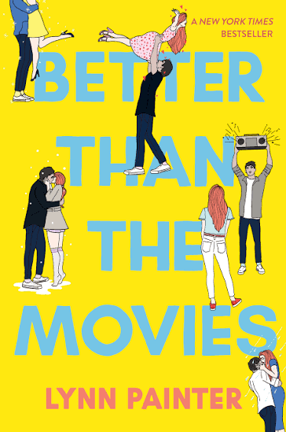
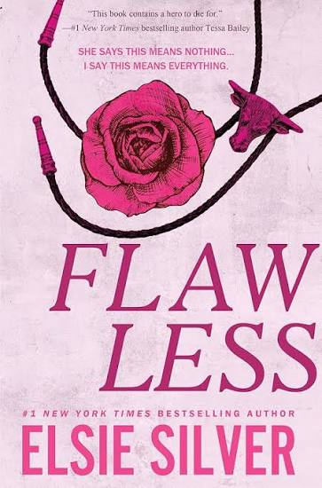
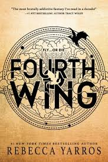
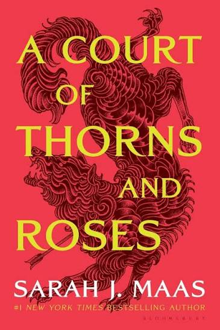
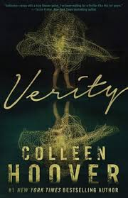
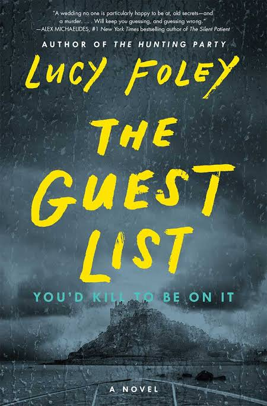

ROMANCE
Better Than the Movies
If you like rom-com energy, banter, and a little chaos, this is such a fun one.
Books I loved, books I still think about, and books I would make my friends read.
I wanted this site to feel less like a book catalog and more like me handing you a book and saying, "Trust me, read this one." Most of what I read is romance, fantasy, or thrillers, so those are the books I put here.
My taste is a mix of romance, fantasy, and books where nobody can be trusted. Here are six I would happily recommend.

ROMANCE
If you like rom-com energy, banter, and a little chaos, this is such a fun one.

ROMANCE
A small-town romance that was much more addictive than I expected it to be.

FANTASY
I came for the dragons and stayed for the drama. This one is very hard to put down.

FANTASY
A good choice if you want fantasy, romance, and a series you can completely disappear into.

THRILLER
Uncomfortable, strange, and impossible not to finish. I still have questions about the ending.

THRILLER
Almost everyone seems suspicious, which is exactly what made this one fun to read.
The shelf for banter, tension, dramatic misunderstandings, and characters you are desperately waiting to get together.
For when real life is boring and you'd rather have magic, impossible worlds, dragons, and questionable decisions.
Secrets, lies, unreliable people, and the moment where you realize your original theory was completely wrong.
Tell me what you're in the mood for and I'll choose one of the books from my shelf.
Your next read will show up here.
One of my favorite things about finishing a really good book is immediately wanting someone else to read it so I have a person to talk about it with.
I wanted one place to keep a few books I genuinely enjoyed and would recommend to someone else. My shelf usually jumps between romance, fantasy, and thrillers, so that's exactly what ended up here.